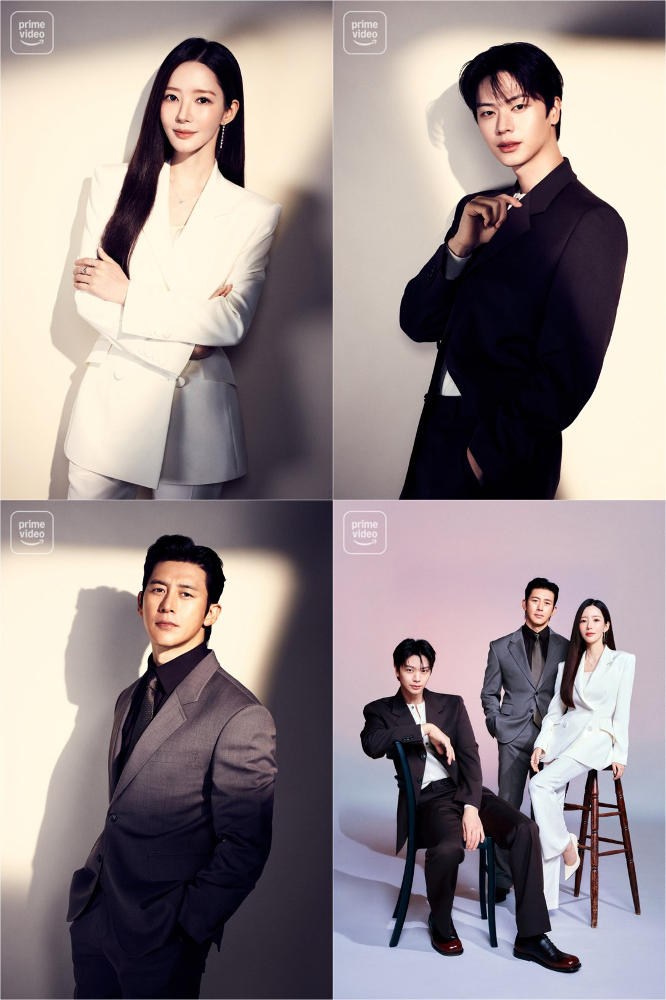

"내일도 모레도 저는 그대로 있을게요." SBS가 11월 5일 공개한 '나인 투 식스' 2차 티저 속 대사예요. 같은 날 주연 박민영과 육성재는 SBS 예능 '거장항준'에 나란히 앉았어요. 예능에서는 키스신 이야기가 가장 크게 다뤄졌지만, 정작 궁금한 건 이 박민영 드라마가 어떤 작품인지예요.
📷 사진 1 자리
▲ '나인 투 식스' 캐릭터 포스터. 박민영, 육성재, 고수 · 사진=SBS ‘나인 투 식스’ 제공
'나인 투 식스'는 어떤 드라마
'나인 투 식스'는 SBS 새 수목드라마예요. 박민영과 육성재가 연상연하 커플로 나오는 오피스 로맨스이고, 앞선 보도에서는 9살 연하 육성재와 워커홀릭 차장·인턴의 사내 연애로 소개됐어요.
▶ 영상 1 자리
공식 티저는 이 작품을 '워러밸 오피스 로맨스'라고 불러요. 출연진에는 고수도 이름을 올렸고, 방송 시기는 '올 연말'이에요. 공개된 캐릭터 포스터에는 prime video 로고가 들어 있고, 넷플릭스와 아마존 프라임 비디오에서도 함께 공개될 예정이라는 보도가 나왔어요.
📷 사진 2 자리
▲ '나인 투 식스' 속 박민영 스틸 · 사진=SBS 제공
📷 사진 3 자리
▲ '나인 투 식스' 속 고수 스틸 · 사진=SBS 제공
키스신은 이미 찍었다, 육성재의 촬영담
'거장항준'에서 장항준은 박민영에게 '키스 거장'이라는 별명을 붙였고, 육성재는 한술 더 떠 '키시스트'라고 불렀어요. 이어 육성재는 '나인 투 식스' 촬영 이야기를 꺼냈어요. 연하남이 직진하는 키스신이 많았는데, 자신이 다가가는 장면인데도 "빨려 들어가는 느낌"이었다고요.
▶ 영상 2 자리
박민영은 키스신을 따로 떼어 생각하지 않는다고 했어요. 그때의 대사와 눈빛, 분위기와 표정까지 하나가 돼야 장면이 겉돌지 않는다는 거예요. 육성재가 말한 '연하남의 직진'은 보도된 극 중 관계와 그대로 겹쳐요. 9살 차이 차장과 인턴의 이야기가 어떤 온도로 그려질지 짐작할 단서인 셈이에요.
오디션 이야기, 육성재의 '학교 2015'
이날 방송의 형식은 오디션이었어요. 두 사람은 장항준의 차기작이라는 '내 할머니는 구미호' 대본으로 즉석 연기를 했고, 박민영은 하울링까지 선보였어요. 육성재는 대본을 읽고 "이해가 안 되는 대본은 처음"이라고 말해 웃음을 샀어요.
육성재는 실제 오디션 기억도 꺼냈어요. 비투비 활동으로 바쁘던 시절 '학교 2015' 오디션에서 감독이 그룹을 깎아내리는 말을 하자 화가 나 얼굴이 빨개진 채 항의하고 나왔다고 해요. 그런데 그가 받은 역할은 분노조절장애가 있는 학생 공태광이었어요. 육성재는 감독이 자신을 시험한 것이었다고 돌아보며 "천운"이라고 했죠.
▶ 영상 3 자리
✍️ 내 경험 자리 — 직접 보고·듣고 느낀 점 3~5문장으로 바꿔 주세요 (네이버 D.I.A.는 경험이 담긴 글을 우대하고, 경험 없는 글은 검색에서 밀릴 수 있어요)
'나인 투 식스'는 박민영·육성재가 연상연하로 나오고 고수가 함께하는 SBS 수목 오피스 로맨스예요. 올 연말 SBS에서 방송될 예정이고, 정확한 첫 방송 날짜는 아직 나오지 않았어요.
